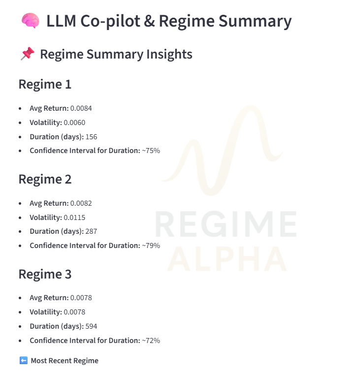
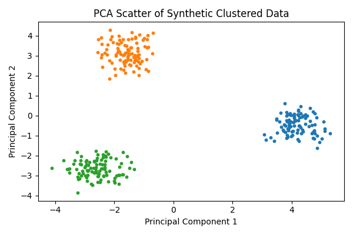
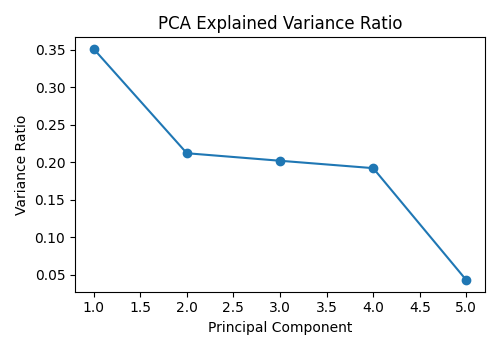
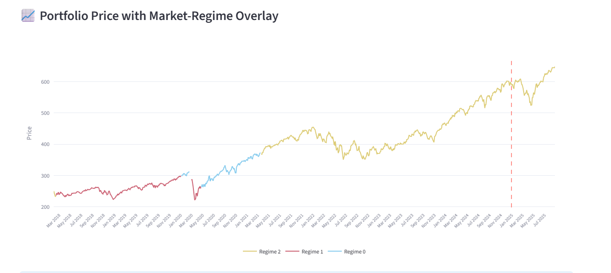
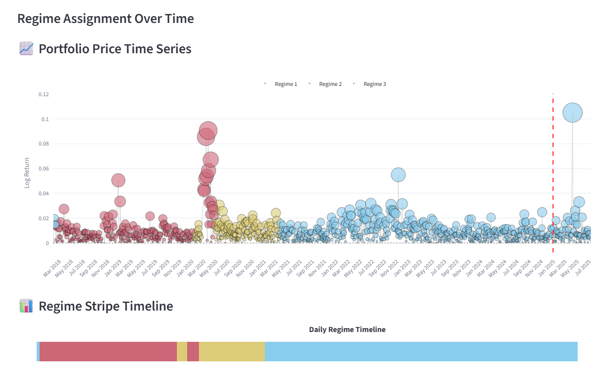

Wealth Managers & Advisors
Diagnose portfolio exposures in the current regime and communicate recommendation logic to clients with greater clarity.
Portfolio-First Regime Analytics
Regime Alpha helps investment teams interpret portfolio exposures in the current market regime, identify the factor drivers behind those exposures, and generate explainable recommendations and summaries for professional decision workflows.
Built for professional teams that need consistent portfolio diagnosis, recommendation framing, and explainable communication under changing market regimes.
Diagnose portfolio exposures in the current regime and communicate recommendation logic to clients with greater clarity.
Evaluate effective diversification across mandates and support allocation discussions with interpretable driver context.
Decompose exposures into regime-relevant drivers and turn technical analysis into practical decision support.
Frame risk, sizing, and committee discussions with regime state, effective bets, and transparent recommendation pathways.
Combine portfolio holdings with market, macro, rates, credit, and volatility inputs.
Estimate current regime probabilities and transition risk with interpretable state models.
Map portfolio risk into regime-relevant drivers and estimate effective bets in the active regime.
Generate recommendation logic shaped by goals and constraints, then produce manager- and client-ready summaries.
Track changing market states and interpret what the active regime implies for portfolio exposures.
Break exposures into interpretable regime-relevant drivers across macro, rates, credit, and volatility dimensions.
Assess effective diversification and effective bets from portfolio factor exposures within the current regime.
Generate recommendation pathways that can be aligned with portfolio composition, goals, and constraints.
Integrate regime probabilities, driver context, and diagnostics into recurring reporting and review workflows.
Support LLM-generated manager, advisor, committee, and client summaries grounded in model outputs.
Review state confidence over time and monitor transition risk as part of portfolio diagnosis.

Inspect how regime-relevant factors cluster and explain portfolio behavior under the active state.

Use conditional PCA views to estimate effective bets and concentration in the current regime.

Recommendation views are designed to tie regime state, portfolio composition, and client constraints into actionable next steps.

Summary workflows support advisor, committee, and client communication with explainable narrative grounded in the diagnostics.

Built to interpret what a regime means for a specific portfolio, not just label the market.
Connect regime shifts to transparent factor and driver decomposition suitable for professional review.
Estimate effective diversification in the active regime to support risk framing and portfolio decisions.
Support recommendations tied to goals and constraints, with outputs usable by PMs, advisors, committees, and clients.
Use Gaussian mixture and hidden Markov approaches to model state behavior, persistence, and transition risk.
Apply Block PCA on the variable set to improve signal structure before regime and portfolio diagnostics.
Estimate effective bets from factor exposures conditioned on the currently identified regime.
Translate model outputs into concise narratives and LLM-assisted summaries for manager and client use.
Regime Alpha is designed for professional workflows, with support for secure deployment options and structured reporting.
For evaluation and early exploration.
For advisors, researchers, and smaller teams.
For firms that need deployment flexibility, scale, and workflow support.
Whether you run client portfolios or institutional mandates, Regime Alpha is built to help teams diagnose exposures, evaluate effective bets, and produce explainable recommendations in changing market regimes.
Contact: joe@regimealpha.com